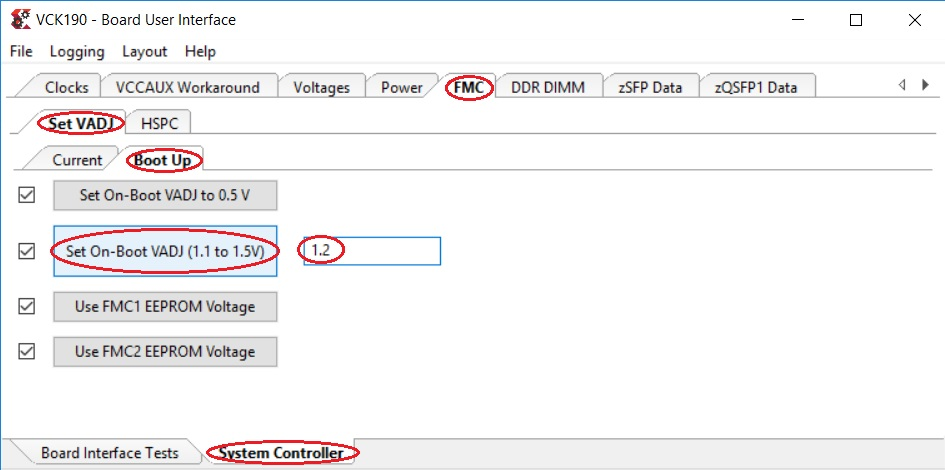

3.1. Board and System settings¶
3.1.1. Prerequisites¶
Prebuilt SD Image zip file
Terminal emulator, for example
Windows: teraterm (https://osdn.net/projects/ttssh2)
Linux: picocom (https://github.com/npat-efault/picocom/releases)
Windows: Win32 Disk Imager utility (https://sourceforge.net/projects/win32diskimager)
Windows: 7zip utility (https://sourceforge.net/projects/sevenzip/)
3.1.2. Reference Design SD Card Creation¶
The reference design prebuilt SD image zip file can be downloaded from the below location.
Platform |
2D filter |
XVDPU |
|---|---|---|
vck190_mipiRxSingle_hdmiTx |
Unzip the downloded file. This should contain the zipped wic image petalinux-sdimage.wic.xz
and a readme file pointing to Third party licenses and sources associated with this image.
Choose an unpartitioned SD card of size 8GB or greater for this demo. Use the
Win32 Disk Imager utility for Windows or ‘dd’ command line utility for Linux
to write the given raw disk image petalinux-sdimage.wic to the SD card.
After unzipping the image file petalinux-sdimage.wic.xz using the 7zip
utility on Windows, use the following steps to write a raw disk image to a
removable device using the Win32 Disk Imager utility.
Browse to the location of the unzipped image in the Win32 utility. In the ‘File name’ field, type
*.wic, otherwise only files with the.imgending file be shown. Alternatively, change the drop down menu on the bottom right from ‘Disk Images (*.img *.IMG)’ to ‘*.*’.Choose the correct SD card drive letter under ‘Device’
Select ‘Write’ to the SD card, click ‘Yes’ at the prompt to continue writing and wait till the operation is complete

Steps to write a raw disk image to a removable device using dd command-line utility for Linux
unzip the given image file
petalinux-sdimage.wic.xzin linuxUse dd to write
petalinux-sdimage.wicto correct enumerated disk for SD card in the Linux machine:unxz petalinux-sdimage.wic.xz sudo dd if=petalinux-sdimage.wic of=/dev/sdbx bs=1M
SD card partitions
Once the raw image is written to the SD card, you will be able to see two partitions. The first partition (FAT16 format) is the boot partition and it contains:
Xilinx OpenCL binary container (
binary_container_1.xclbin)Boot image (
BOOT.BIN)u-boot boot script (
boot.scr)Linux kernel image (
image.ub)Initial filesystem in ramdisk (
ramdisk.cpio.gz.u-boot)
while in the second patition (ext4 format) resides the root file system.
Note: A Windows OS would only allow FAT16 partitions to be viewed whereas the ext4 format is not recognized.
3.1.3. System Controller¶
Note
If you think that you have the correct System Controller (SC) SD Image then this section can be skipped.
Production Silicon
The image (Beta 2.1) and instructions to write to SC SD card are avaialble on the Beam Tool page
3.1.4. Board Setup¶
The following figure shows how to set up the VCK190 evaluation board.
{kind=link}
Board jumper and switch settings
This is a onetime setup and the board should have been delivered to you with this default settings, but it is good to double check for the first time when you get the board.
Make sure you remove J326 (7-8) jumper.
Setup SYSCTRL Boot mode switch SW11 to (ON,OFF,OFF,OFF) from switch bits 1 to 4 as shown in the above picture.
Make sure you have the SYSCTRL uSD card inserted in the slot and card has the SYSCTRL image.
Setup Versal Boot Mode switch SW1 to (ON,OFF,OFF,OFF) from switch bits 1 to 4 as shown in the above picture.
MIPI and HDMI connections
The platform supports video capture from the Leopard IMX274 MIPI FMC. Connect the FMC card to the FMCP1 slot (J51) as shown in the above figure. For more info on the FMC module, visit: https://www.leopardimaging.com/uploads/LI-IMX274MIPI-FMC_datasheet.pdf. The platform supports video display via HDMI Tx. Connect the HDMI cable as shown in the above figure. Connect the other end of the cable to a HDMI port in the monitor.
PCI express connections
The platform supports video file input from the host machine via PCIe EndPoint 8-lane edge connector (P3) as shown in the above figure. The platform also supports video dispaly via PCIe on a monitor (DP) connected to the host machine.
Serial console settings
VCK190 comes with a USB-C connector for JTAG+UART, when connected three UART ports should be visible in Device Manager:
Versal UART0
Versal UART1 &
System Controller UART
Connect a USB-C cable to the USB-UART connector. Open two terminal emulator windows. Choose Versal UART0 on one and System Controller UART on the other and use the following settings on the Serial Port:
Baud Rate: 115200
Data: 8 bit
Parity: None
Stop: 1 bit
Flow Control: None
Vadj settings
Perform the following steps to set the Vadj voltage rail to 1.2V using the BoardUI/Board Interface Test(BIT) utility:
Power on the board.
On the System Controller UART terminal type the following commands at the linux prompt. This will allow the BoardUI/Board Interaface Test utility to communicate with the System Controller. For more information refer to http://wiki.xilinx.com/BEAM+Tool+for+VCK190+Evaluation+Kit
EXT<Enter key><Tab Key> sed -i -e 's/^#//' /etc/init.d/start_boardframework.sh /etc/init.d/start_boardframework.sh
Close the System Controller UART terminal
Download the BoardUI/Board Interface Test(BIT) tool from the following link:
Extract the zip file and start the BoardUI/Board Interface Test(BIT) tool by clicking on BoardUI.exe. Make sure the USB-C cable is connected to your PC and the system controller Micro SD card is inserted. Also make sure you Vivado Design Suite HW Manager is installed on the host machine.
In the BoardUI GUI, navigate to the FMC Boot Up tab following the red circles as shown in the below figure. Enter 1.2 in the Set On-Boot VADJ field and click the button next to it to save the value.
Power-cycle the board and navigate to the FMC Current tab. Click the Get VADJ_FMC Voltage button to read out the current voltage setting and confirm it matches the 1.2V set in the previous step.
Close the BoardUI utility.
{kind=link}
Note
If Vadj does not persists after reboot, try updating the System Controller SD card image (Instructions provided in the System Controller section of this tutorial).
First Boot
Follow these steps to boot the board into Linux
Ensure all steps under the section Board Setup are verified.
Insert the prepared micro SD card into the Versal SD card slot (refer to the image in Reference Design SD Card Creation)
Have the UART0 terminal emulator tab connected.
Turn ON power switch SW13.
On Versal UART0 terminal, you would see the Versal device booting from the micro SD card, starting with the message “Xilinx Versal Platform Loader and Manager”
In about 60 seconds boot is complete. Observe the Linux prompt to login and set a new password as shown below. Use ‘petalinux’ as login name and set an easy password that you do not forget. Use this password when you boot again or when using sudo.
xilinx-vck190-20222 login: petalinux You are required to change your password immediately (administrator enforced). New password: Retype new password:
3.1.5. Host Machine Software setup¶
Directory and file description
Following are the list of directories in pcie_host_package directory.
apps: QDMA User space application to configure and control QDMA
docs: Documentation for the Xilinx QDMA Linux Driver
driver/src: Provides interfaces to manage the PCIe device and exposes character driver interface to perform QDMA transfers
driver/libqdma: QDMA library to configure and control the QDMA IP
scripts: Sample scripts for perform DMA operations
Makefile: Makefile to compile the driver
pcie_app: This application receives frame buffer data from host, processes it and sends frame buffer to host using QDMA driver
Note
Make sure, the VCK190 board is powered on before booting the HOST machine to enumerate VCK190 board as PCIe endpoint device successfully
Power on the HOST machine
Execute following command on HOST machine’s terminal to check If the Board is linking up:
lspci -vd 10ee:
On successful Linkup below entry appears followed by additional capabilities of VCK190 as endpoint:
03:00.0 RAM memory: Xilinx Corporation Device b03f
If above entry is missing QDMA driver will not be able to recognized PCIe endpoint device.
If not already done, copy pcie_host_package directory to PCIe host machine.
3.1.5.1. Updating the PCIe device ID (if needed)¶
Make sure that PCIe Device ID in the driver is matching to Device ID observed in linkup status. in above output b03f is device ID.
During the PCIe DMA IP customization in Vivado you can specify a PCIe Device ID. This Device ID must be recognized by the driver in order to properly identify the PCIe QDMA device.
To Check/modify the PCIe Device ID in the driver, open the $vck190-pcie-trd/pcie_host_package/qdma/driver/src/pci_ids.h file (line no : 320) from the driver source and search for the pcie_device_id struct. This struct defines the PCIe Device IDs that are recognized by the driver in the following format:
{PCI_DEVICE (0x10ee, 0xb03f),},
Add, remove, or modify the PCIe Device IDs in this struct. The PCIe DMA driver will only recognize device IDs identified in this struct as PCIe QDMA devices. User can also remove PCIe Device IDs that are not be used in their solution. On every modification, the driver must be un-installed and recompiled, if compiled previously.
For additional information refer https://xilinx.github.io/dma_ip_drivers/master/QDMA/linux-kernel/html/build.html
Follow below steps to Install the QDMA driver
Note
Root permissions will be required to install qdma driver.
Build the QDMA driver
cd pcie_host_package/qdma make
Install the QDMA driver
make install-modsConfigure the QDMA module paramters using following script:
./scripts/qdma_generate_conf_file.sh <bus_num> <num_pfs> <mode> <config_bar> <master_pf>`
Ex: (Assuming PCIe BDF - 03:00.0)
./scripts/qdma_generate_conf_file.sh 0x03 1 0 1 0
For loading the driver, execute the following command: (This is required only First time, from next boot driver loads automatically)
modprobe qdma-pfSetup and Enable Queues for H2C and C2H: (Refer link in NOTE_1 for more details) Allocate the Queues to a function. QDMA IP supports maximum of 2048 queues. By default, all functions have 0 queues assigned. qmax configuration parameter enables the user to update the number of queues for a PF. This configuration parameter indicates “Maximum number of queues associated for the current pf”.
To set 1024 as qmax for PF0:
echo 1024 > /sys/bus/pci/drivers/qdma-pf/$BDF/qdma/qmax
To Add a Queue:
dma-ctl qdma<bbddf> q add idx <N> [mode <st|mm>] [dir <h2c|c2h|bi>]
Ex: (Assuming PCIe BDF - 03:00.0)
dma-ctl qdma03000 q add idx 0 mode mm dir h2c dma-ctl qdma03000 q add idx 1 mode mm dir c2h
To start a Queue:
dma-ctl qdma<bbddf> q start idx <N> [dir <h2c|c2h|bi>]
Ex: (Assuming PCIe BDF - 03:00.0)
dma-ctl qdma03000 q start idx 0 dir h2c dma-ctl qdma03000 q start idx 1 dir c2h
Build host application:
cd pcie_app/
Modify macros H2C_DEVICE , C2H_DEVICE , REG_DEVICE_NAME in pcie_host.cpp , using /dev/ nodes generated for the pcie device based on its Bus:Device:Function number.
Ex: Assuming PCIe BDF as 03:00.0 the above macros need to be set as
If H2C queue index is 0 device node is /dev/qdma03000-MM-0 (Queue index for H2C is set in above “Add a queue” step)
If C2H queue index is 1 device node is /dev/qdma03000-MM-1 (Queue index for C2H is set in above “Add a queue” step)
REG_DEVICE_NAME is /sys/bus/pci/devices/0000:03:00.0/resource0
Modify pcie_app/app1.pro line no 35 and 39 for opencv library path and opencv include path before compilation
set QMAKE_PATH to installed QT qmake path
export QMAKE_PATH=/opt/Qt5.9/5.9/gcc_64/bin/qmake`
compile application:
./do_compile.sh
3.1.5.2. Generation of Raw video Input file¶
Note
Ensure that Gstreamer packages installed on the Linux PC. If using Ubuntu distribution, ensure that the version is atleast 16.04.
Download VP9 encoded sample file such as [Big_Buck_Bunny](https://upload.wikimedia.org/wikipedia/commons/transcoded/c/c0/Big_Buck_Bunny_4K.webm/Big_Buck_Bunny_4K.webm.480p.vp9.webm)
Run following GST command to create 3840x2160 resolution raw file with YUY2 format with 30fps
gst-launch-1.0 filesrc location=<file_path>/Big_Buck_Bunny_4K.webm.480p.vp9.webm ! decodebin ! queue ! videoconvert ! videoscale ! videorate ! video/x-raw, width=3840, height=2160, format=YUY2, framerate=30/1 ! filesink location=<file_path>/4k30.yuv
Run following GST command to create 1920x1080 resolution raw file with YUY2 format with 30fps
gst-launch-1.0 filesrc location=<file_path>/Big_Buck_Bunny_4K.webm.480p.vp9.webm ! decodebin ! queue ! videoconvert ! videoscale ! videorate ! video/x-raw, width=1920, height=1080, format=YUY2, framerate=30/1 ! filesink location=<file_path>/1080p30.yuv
Licensed under the Apache License, Version 2.0 (the “License”); you may not use this file except in compliance with the License.
You may obtain a copy of the License at http://www.apache.org/licenses/LICENSE-2.0
Unless required by applicable law or agreed to in writing, software distributed under the License is distributed on an “AS IS” BASIS, WITHOUT WARRANTIES OR CONDITIONS OF ANY KIND, either express or implied. See the License for the specific language governing permissions and limitations under the License.